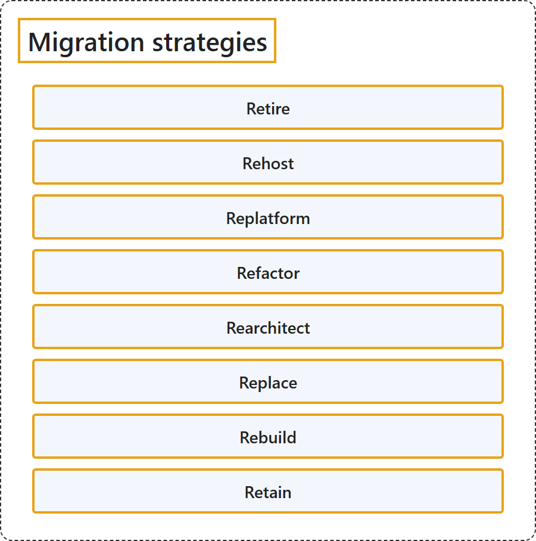

24.1 Migration Strategies
Classification

Glossary
| Term | Definition | 中文解释 | Source |
|---|---|---|---|
| Migration strategies 迁移策略 |
"There are multiple migration strategies, sometimes known as the 'Rs' of cloud migration. Each workload can be Retired, Retained, Rehosted, Replatformed, Refactored, Rearchitected, Rebuilt, or Replaced." | 有多种迁移策略，有时称为云迁移的 R 策略。每个工作负载都可以被停用、保留、重新托管、更换平台、重构、重新架构、重建或替换。 | Microsoft, n.d., "Select your cloud migration strategies" introduction, para. 1 |
| Retire 停用 |
"Retire decommissions workloads that no longer provide business value." | Retire 会停用工作负载，这些工作负载不再提供业务价值。 | Microsoft, n.d., "1. Retire (decommission)" section, para. 1 |
| Rehost 重新托管 (also known as lift-and-shift) |
"A rehost strategy enables fast and low-risk migration by moving workloads to Azure with minimal changes." Also known as lift-and-shift: "Azure Migrate supports rehosting (also known as lift-and-shift)." |
重新托管策略实现快速、低风险的迁移，方法是以最少的更改把工作负载移到 Azure。 也称为 lift-and-shift（直接迁移）："Azure Migrate 支持重新托管（也称为 lift-and-shift）。" |
Microsoft, n.d., "2. Rehost (like-for-like migration)" section, para. 1 Microsoft, 2024, "What migration approaches do I have with Azure Migrate…?" section, para. 2 |
| Replatform 更换平台 |
"Replatforming moves workloads to a modern hosting environment with minimal code changes." | 更换平台把工作负载移到现代托管环境，只需极少的代码更改。 | Microsoft, n.d., "3. Replatform (modernize hosting environment)" section, para. 1 |
| Refactor 重构 |
"Refactoring improves the internal structure of code without adding new features." | 重构改进代码的内部结构，但不添加新功能。 | Microsoft, n.d., "4. Refactor (modernize code)" section, para. 1 |
| Rearchitect 重新架构 |
"A rearchitect strategy redesigns the workload's architecture to improve scalability, agility, and service orientation." | 重新架构策略重新设计工作负载的架构，以提升可伸缩性、敏捷性和面向服务的程度。 | Microsoft, n.d., "5. Rearchitect (modernize architecture and code)" section, para. 1 |
| Replace 替换 |
"A replace strategy uses commercial SaaS solutions to eliminate the need for custom development and ongoing maintenance." | 替换策略使用商业 SaaS 解决方案，从而无需自定义开发和持续维护。 | Microsoft, n.d., "6. Replace (use SaaS alternative)" section, para. 1 |
| Rebuild 重建 |
"A rebuild strategy is a full redevelopment of a workload using cloud-native solutions." | 重建策略是对工作负载的完全重新开发，使用云原生解决方案。 | Microsoft, n.d., "7. Rebuild (build cloud-native)" section, para. 1 |
| Retain 保留 |
"A retain strategy keeps workloads in their current environment when they're stable, compliant, and meet all current and future business needs with no near-term driver to move." | 保留策略让工作负载留在当前环境中，前提是它们稳定、合规，并满足当前和未来的所有业务需求，且近期没有迁移的驱动因素。 | Microsoft, n.d., "8. Retain (keep as is)" section, para. 1 |
References
Microsoft. (n.d.). Select your cloud migration strategies. Cloud Adoption Framework. Microsoft Learn. Retrieved October 18, 2026, from https://learn.microsoft.com/en-us/azure/cloud-adoption-framework/plan/select-cloud-migration-strategy
Microsoft. (2024, June 20). Azure Migrate: Common questions. Microsoft Learn. https://learn.microsoft.com/en-us/azure/migrate/resources-faq